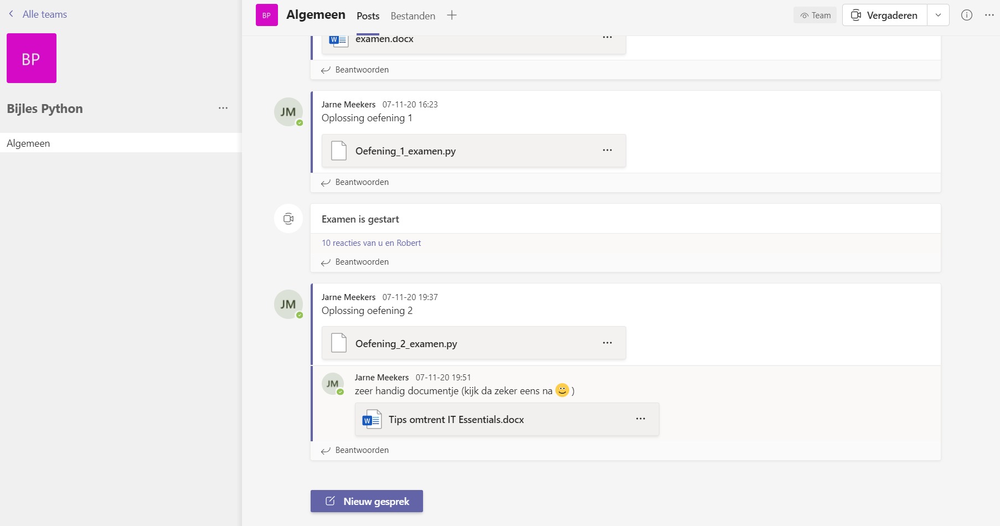
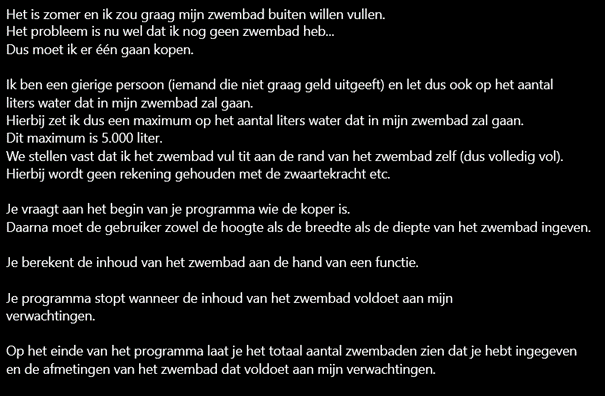
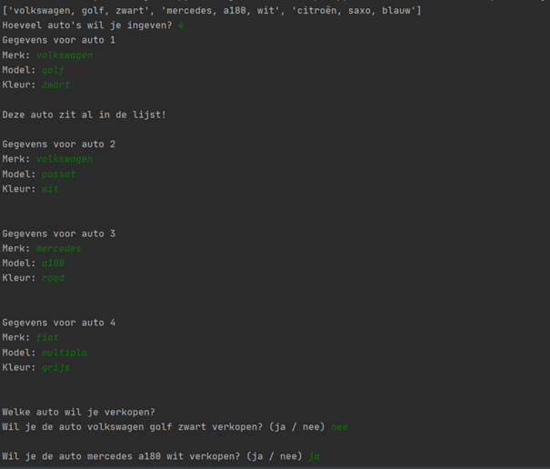
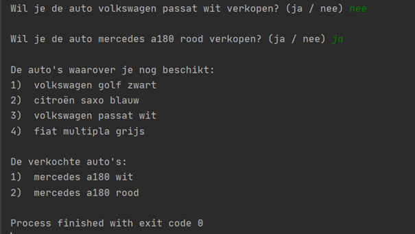

<mat-vertical-stepper #stepper>
    <button mat-button matStepperNext>Next</button>
    <mat-step >
        <ng-template matStepLabel>Communication</ng-template>
        
    </mat-step>
    <mat-step >
        <ng-template matStepLabel>Oefeningen</ng-template>
        
        
    </mat-step>
    <mat-step>
        <ng-template matStepLabel>Voorbeelden</ng-template>
        
        
    </mat-step>
    <mat-step>
        <ng-template matStepLabel>Tips</ng-template>
        
    </mat-step>
</mat-vertical-stepper>